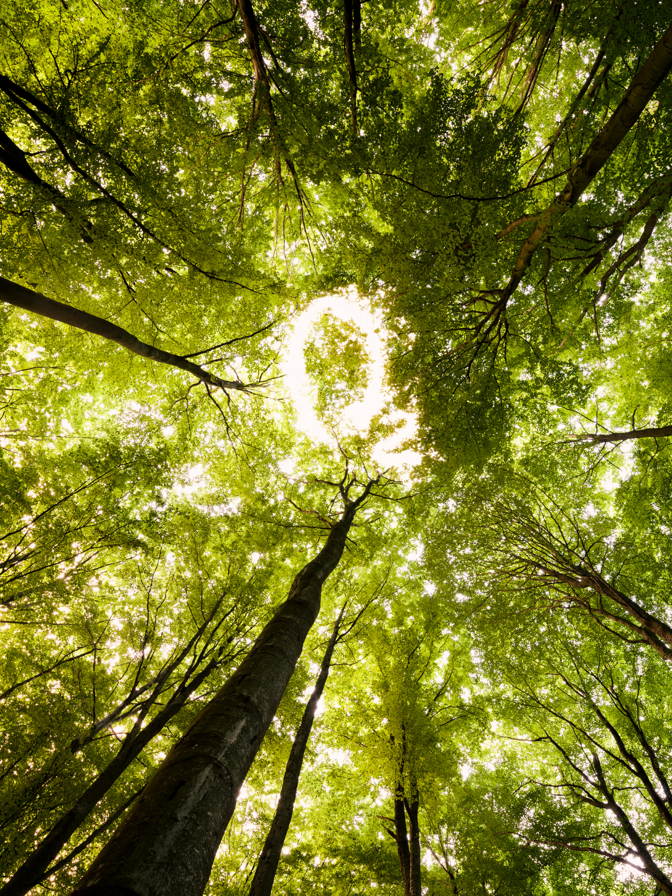
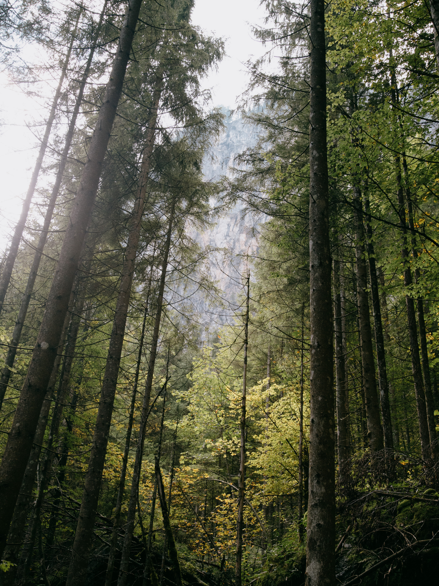

01 · SHOP
Choose a product
Eco Tote Bag, Plantable Pencil, or Planting Kit.
TreeTrack #1 is the first campaign in the TreeTrack journey. It uses three everyday products to gather support for tree planting in Jakarta toward the end of the month.

20% of profit from the TreeTrack #1 product line is allocated to the campaign. After planting, each participating supporter can receive a virtual tree entry in My Tree.
Each step is intentionally simple so the campaign can grow with the community.
Eco Tote Bag, Plantable Pencil, or Planting Kit.
20% of profit from each product is directed to TreeTrack #1.
Collected support is used toward a tree-planting activity in Jakarta at the end of the month.
Participants can follow a virtual tree journey linked to the campaign they supported.
Campaign supporters should know what their contribution is connected to.
TreeTrack #1 is designed so a purchase is not the end of the experience. Once the campaign reaches its planting stage, a supporter can return to the platform to see their virtual tree and follow monthly growth updates.
The first status shown in My Tree is Waiting to be planted. Later phases are designed to progress through planted, first sprout, and growing as updates are made.
Each status represents a different stage in the journey, allowing supporters to stay connected with the progress of their tree over time. Instead of receiving only a one-time confirmation, users can return to TreeTrack and see how their participation develops from an initial contribution into a longer-term environmental story.
Through these updates, TreeTrack aims to make the connection between digital participation and real-world planting more visible. The virtual tree serves as a simple way to follow that journey, while monthly updates help supporters understand that meaningful environmental action is a process that grows gradually over time.
See My Tree →
One tree can become part of something much bigger.
Every product below carries the same TreeTrack #1 contribution logic.
Sign in before checkout so your order and future virtual tree adoption remain connected to your account.
Shop TreeTrack #1 →